基于分布式强化学习的 UUV 多航点自主跟踪控制
本研究提出面向 UUV 多航点跟踪的分布式强化学习方法 TAQC，结合自适应分位建模、多评论家截断和域随机化，并通过二维、三维、未见轨迹及多样化海底地形仿真场景评价其性能。
主要贡献
- 端到端 UUV 跟踪控制：基于强化学习的多航点连续跟踪策略。
- 分布式强化学习：通过回报的分布建模提升学习效率与稳定性。
- TAQC 方法：在 TQC 框架中引入可学习分位提议网络与区间质量加权损失。
- 域随机化训练：增强在存在干扰情况下对未见轨迹的泛化能力。
研究动机
传统的UUV路径跟踪方法已在多种条件下表现出良好的控制性能。然而，复杂的水下环境和不断变化的任务需求对控制方法的自适应能力提出了更高要求。强化学习（RL）通过与环境交互学习控制策略，为应对这些挑战提供了一种有前景的方法。
PPO和SAC等传统强化学习方法主要基于期望回报进行价值估计，未显式建模完整的回报分布，可能忽略回报的波动信息。此外，现有部分分布式强化学习方法采用固定分位点，限制了对复杂回报分布的表达能力。因此，我们探索使用更灵活的回报分布建模方法以期望提高学习效率和稳定性。
强化学习策略在训练工程中可能会出现过拟合情况，导致其在未见过的环境或任务中性能下降。因此，我们采用域随机化以增强策略对环境变化的适应能力，提高其在不同条件下的泛化性能。
端到端控制
端到端强化学习使UUV能够直接学习从状态观测到控制指令的映射，降低对精确水动力学模型的依赖，并简化控制器设计。同时，该方法能够通过与环境交互学习协调的控制动作，为不确定水下环境中的路径跟踪提供一种灵活的解决方案。
自适应分位表示
引入 FPN 生成非均匀分位区间，更灵活地近似复杂回报分布。
截断多评论家机制
通过多评论家混合分布与尾部截断抑制高估并提升学习稳定性。
域随机化增强泛化
在训练中随机化扰动、参数和初始状态，提升策略泛化性能。
算法框架
TAQC以TQC为基础，在分布式强化学习框架中显式建模回报分布。其主要组成部分包括可学习的分位点生成网络（FPN）、多评论家分位估计、混合分布的上尾截断机制，以及贯穿训练过程的域随机化。
- 端到端控制框架：通过与环境交互，直接学习从状态观测到控制指令的映射关系，从而降低对精确动力学模型的依赖，并简化控制器的设计过程。
- FPN 自适应分位提议：针对不同状态—动作对自适应生成非均匀分位区间，从而更灵活地表示复杂回报分布。
- 多评论家截断机制：将多个目标评论家的量化原子构造成混合分布，并截断右尾以抑制高估。
- 区间质量加权损失：针对非均匀分位区间重构评论家损失，使每个分位项按照对应概率质量参与优化。
- 域随机化：训练阶段随机化海流扰动、水动力参数和初始状态，提升策略对未见条件的泛化能力。
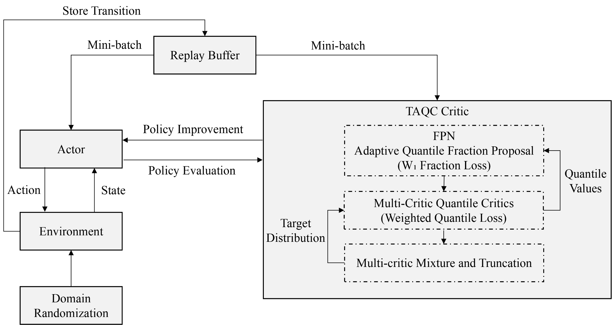
TAQC 总体框架
论文方法主框图：FPN、分位评论家、混合与截断目标分布以及域随机化共同构成完整训练流程。
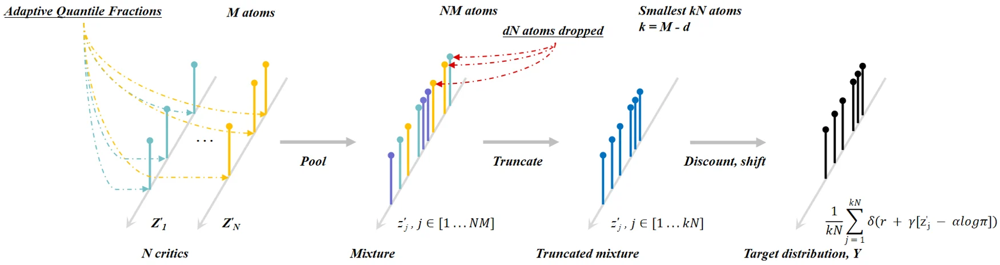
目标回报分布构造过程
FPN 根据状态动作嵌入生成自适应分位区间；多个目标评论家给出分位值并构成混合分布，经截断后得到目标分布。
任务定义与问题描述
UUV 从起始区域出发，在海流等扰动作用下依次到达预设目标航点。当与当前目标航点的三维距离低于阈值时，目标自动切换到下一个航点。论文同时采用 NED 坐标系与艇体坐标系描述 UUV 运动状态，并将该问题建模为连续状态、连续动作的强化学习任务。
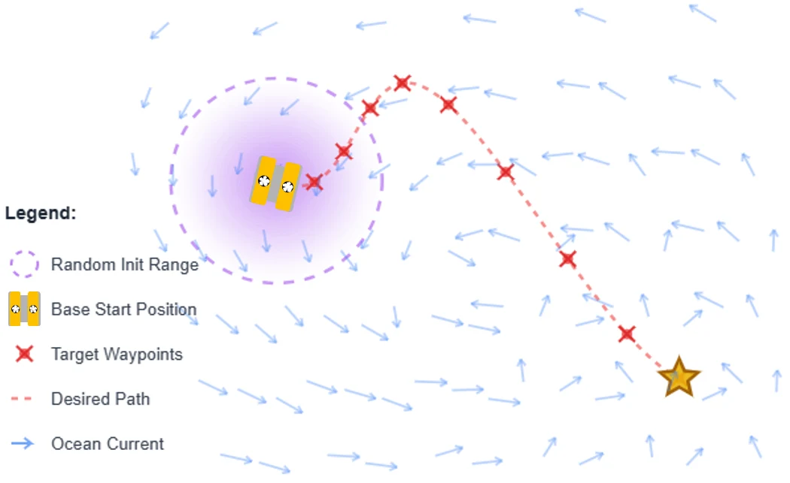
多航点跟踪任务示意
Starting from a base position randomly perturbed within the initialization range, the UUV sequentially tracks the target waypoints until the final goal under disturbances.
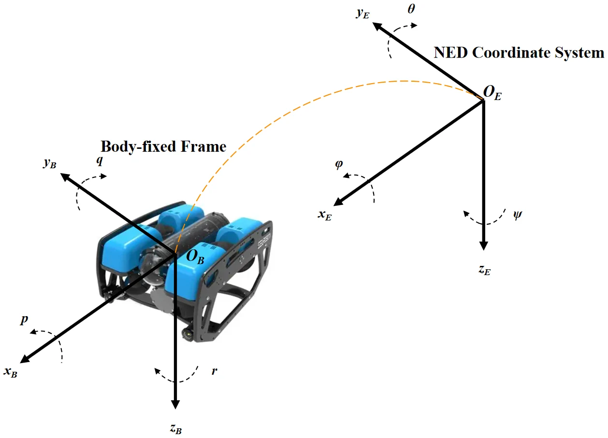
UUV 坐标系
论文采用 NED 坐标系和艇体坐标系描述位置、姿态与速度等变量。
海底地形表示
基于 GEBCO 2025 海底地形数据构建仿真场景
采用 GEBCO 2025 海底地形数据，研究区域位于南海（北纬 15.8266°–16.9246°，东经 111.4766°–112.5746°）。
选取具有代表性的地形区域，并将其映射至局部 50 m × 50 m 仿真工作空间，保留典型高程变化；同时加入合成地形特征，增加用于轨迹跟踪评估的地形多样性。
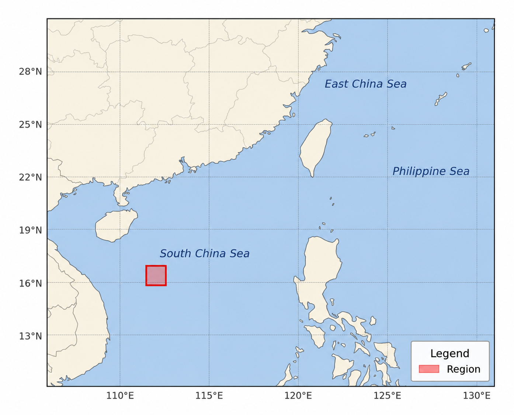
南海研究区域
红色方框表示选取的地理研究区域。
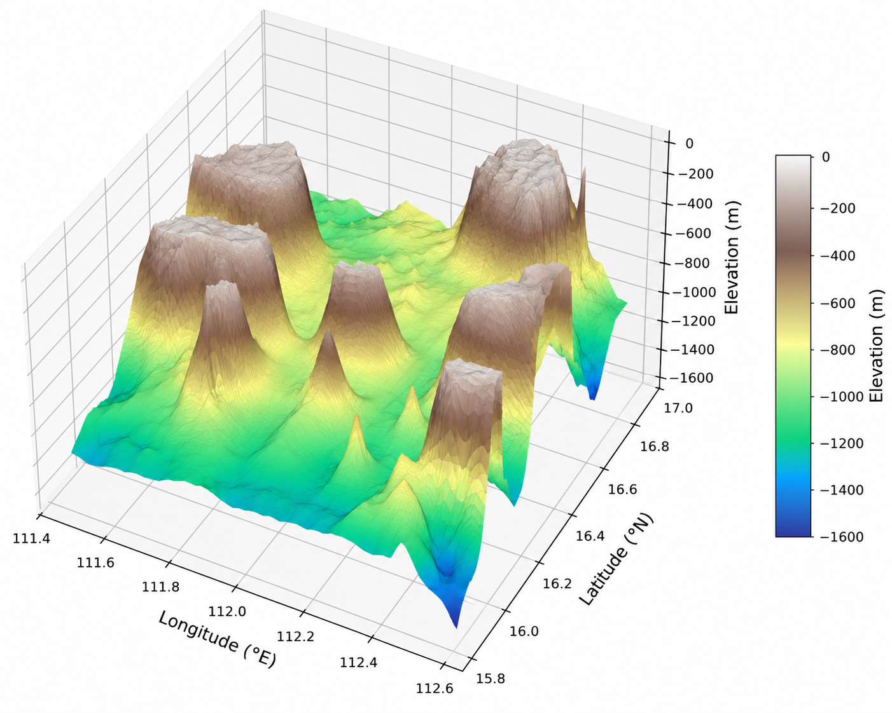
三维海底地形表示
研究区域的海底地形高程特征。
对比算法与实验设置
所有实验均在 bluerov2_gym 环境中进行，采用 BlueROV2 模型。二维训练任务为半径 5 m 的圆形轨迹，三维训练任务为同半径、30 个航点组成的螺旋轨迹。每回合上限 800 步，二维训练预算为 50 万步，三维训练预算为 100 万步。
经典控制方法
- FAPID：Fuzzy Adaptive PID，作为代表性的非机器学习控制器。
- LADRC：Linear Active Disturbance Rejection Control，代表基于扰动观测补偿的控制方法。
期望回报型强化学习
- PPO：基于策略梯度的经典强化学习算法。
- SAC：最大熵框架下的连续控制强化学习方法。
分布式强化学习基线
- TQC：Truncated Quantile Critics，TAQC的直接对比基线，用于评估自适应分位点建模的效果。
- TIQC：本研究过程中构建的对比算法，通过在TQC中引入隐式分位网络实现。
- DSAC-T：Distributional Soft Actor-Critic with Three Refinements，近年来提出的一种面向连续控制任务的分布式强化学习算法。
- TAQC（本文）：在 TQC 的多评论家截断框架中引入可学习分位提议网络与概率质量加权的Critic损失函数。
评价指标
- ATE (Average 3D Tracking Error): 三维空间内智能体与目标点之间的平均距离，衡量整体路径跟踪精度。
- ARE (Average Radial Error): XY 平面上的平均径向误差，衡量水平面跟踪性能。
- AZE (Average Z-Axis Error): Z 轴方向上的平均垂向误差，反映深度保持能力。
- AHE (Average Heading Error): 实际航向与期望航向之间的平均角度误差，反映方向控制稳定性。
- SR (Success Rate): 任务成功完成比例，在泛化和鲁棒性实验中衡量成功率。
- Steps (Episode / Training Steps): 评估阶段为完成任务所需交互步数；训练阶段还统计首次成功步数与收敛步数。
实验结果与分析
二维与三维跟踪、未见轨迹泛化、域随机化鲁棒性和海底地形仿真场景
二维路径跟踪实验
在二维圆形路径任务中，TAQC 与 TQC 能稳定完成任务，其中 TAQC 在平均回报、训练稳定性和样本效率方面更优。DSAC-T 偶尔获得正回报但难以稳定收敛；TIQC、SAC 与 PPO 最终回报低于零，未能学到可行策略。性能指标方面，TAQC 与 TQC 的 ATE / ARE 接近，但 TAQC 以更少步数完成任务，并且 AZE 更低。
| 指标 | FAPID | LADRC | TQC | TAQC |
|---|---|---|---|---|
| ATE (m) | 0.8047 ± 0.0131 | 0.8914 ± 0.0087 | 0.6114 ± 0.0205 | 0.6154 ± 0.0116 |
| ARE (m) | 0.8046 ± 0.0131 | 0.8885 ± 0.0077 | 0.6016 ± 0.0247 | 0.6151 ± 0.0116 |
| AZE (m) | 0.0071 ± 0.0011 | 0.0536 ± 0.0241 | 0.0755 ± 0.0119 | 0.0230 ± 0.0207 |
| AHE (rad) | 0.2338 ± 0.0636 | 1.6163 ± 0.1357 | 0.3872 ± 0.0896 | 0.3633 ± 0.0354 |
| Steps | 423.3 ± 25.0 | 1096.1 ± 31.4 | 387.3 ± 37.3 | 353.0 ± 1.4 |
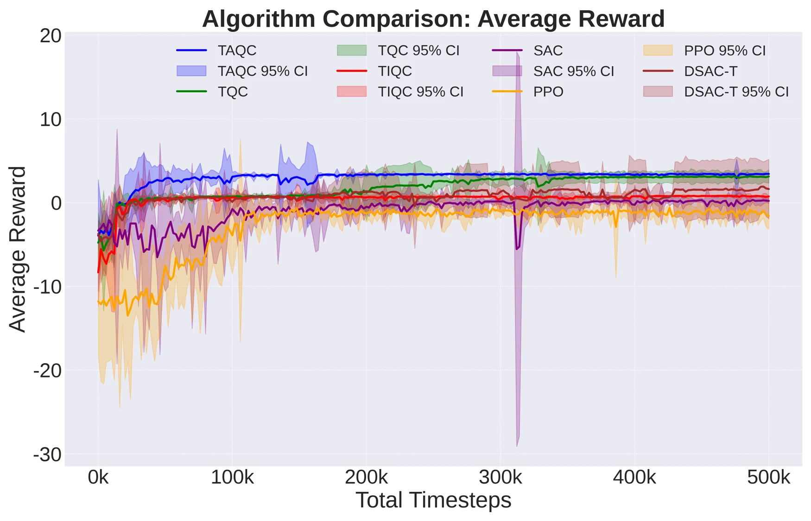
二维训练平均回报
五个独立随机种子的平均回报曲线，阴影表示 95% 置信区间。
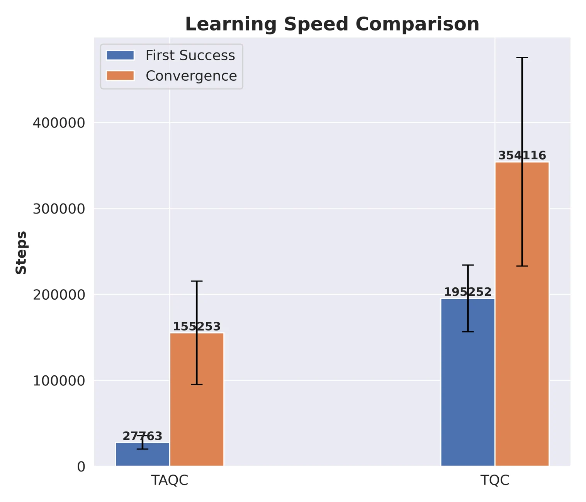
二维任务学习效率比较
比较能够稳定完成任务的方法在首次成功与收敛方面的训练步数。
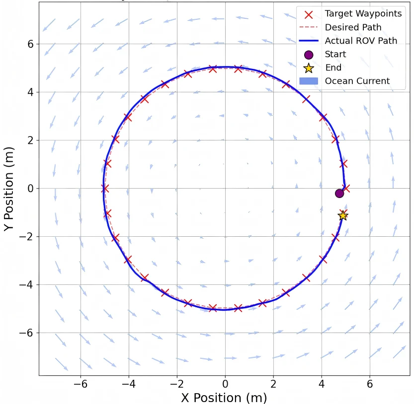
TAQC 控制下的二维轨迹示例
TAQC 能在海流扰动下依次完成所有航点的跟踪。
三维路径跟踪实验
在三维螺旋路径任务中，TAQC 与 TQC 均能平稳收敛到正回报，TAQC 的收敛速度更快、表现更稳定。TIQC 回报水平接近但稳定性较差；DSAC-T 最终能取得正回报，但速度和最终表现均弱于 TAQC；SAC 与 PPO 难以收敛。对比表明，TAQC 获得最低的 ATE 与 ARE，并以最少步数完成任务，体现出较优的任务完成效率。
| 指标 | FAPID | LADRC | DSAC-T | TQC | TIQC | TAQC |
|---|---|---|---|---|---|---|
| ATE (m) | 0.6964 ± 0.0094 | 0.6805 ± 0.0456 | 0.6195 ± 0.0054 | 0.6011 ± 0.0067 | 0.6115 ± 0.0062 | 0.5989 ± 0.0064 |
| ARE (m) | 0.6860 ± 0.0146 | 0.6536 ± 0.0529 | 0.6095 ± 0.0083 | 0.5930 ± 0.0101 | 0.6034 ± 0.0090 | 0.5908 ± 0.0080 |
| AZE (m) | 0.0721 ± 0.0065 | 0.1686 ± 0.0276 | 0.0820 ± 0.0091 | 0.0575 ± 0.0096 | 0.0633 ± 0.0095 | 0.0578 ± 0.0096 |
| AHE (rad) | 0.2071 ± 0.0556 | 1.2535 ± 0.2218 | 0.2829 ± 0.0267 | 0.3792 ± 0.0274 | 0.4098 ± 0.0278 | 0.3675 ± 0.0285 |
| Steps | 443.5 ± 13.6 | 1543.3 ± 152.7 | 367.33 ± 8.23 | 374.64 ± 8.27 | 370.41 ± 10.93 | 354.25 ± 6.25 |
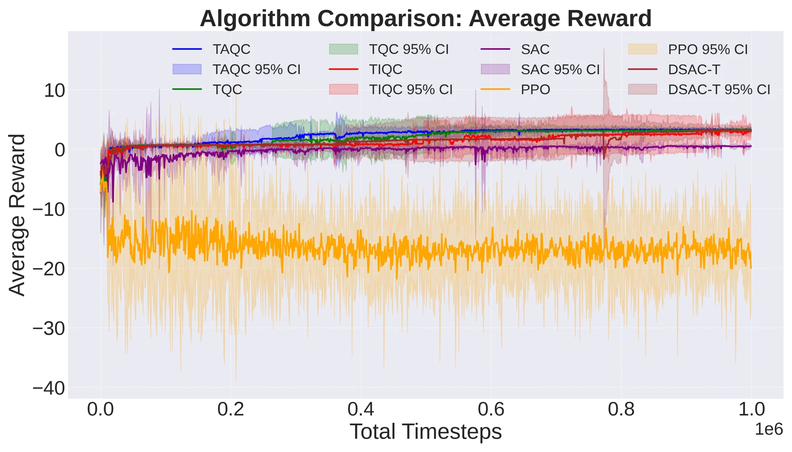
三维训练平均回报
不同智能体在三维训练任务中的平均回报曲线。
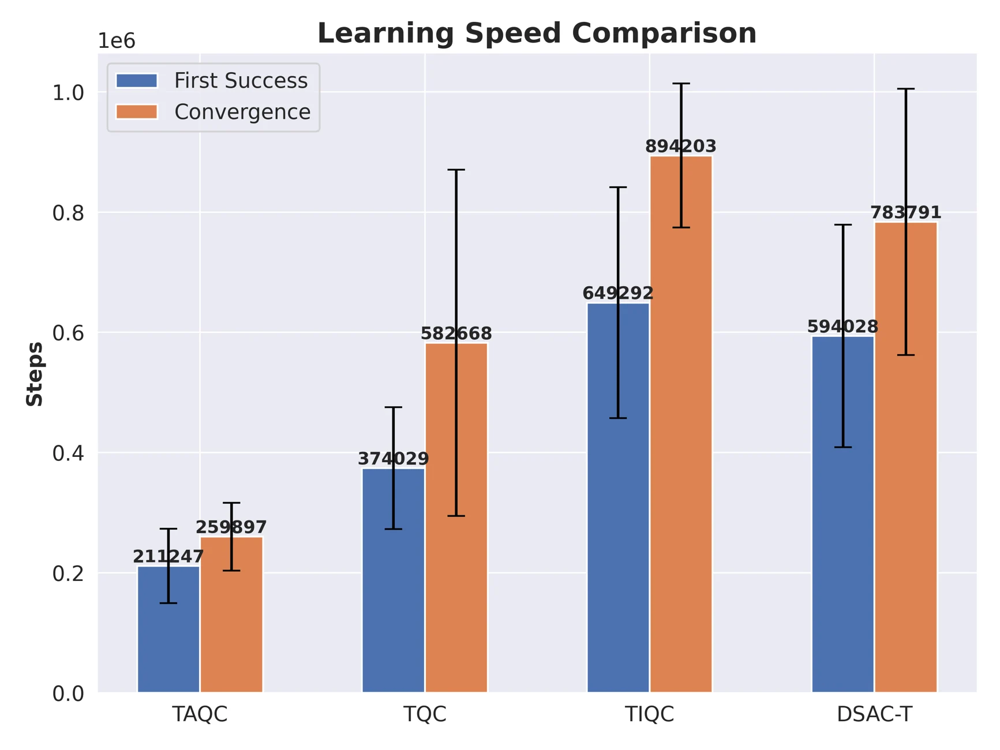
三维任务学习效率比较
比较能够稳定完成任务的方法在训练步数上的差异。
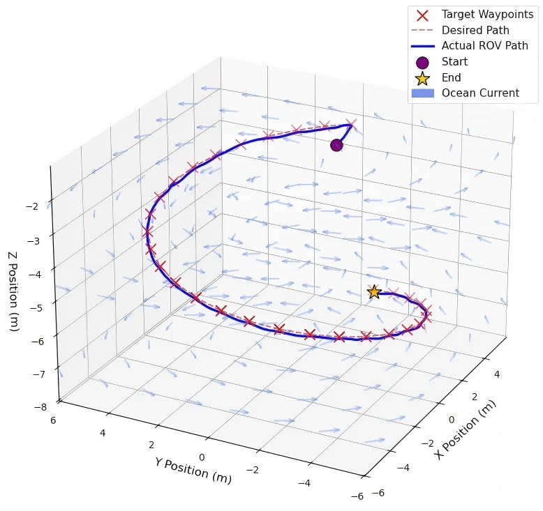
TAQC 控制下的三维轨迹示例
在海流扰动和随机初始位置条件下，TAQC 能完成螺旋多航点跟踪。
三维泛化实验
为评估策略泛化能力，论文将三维训练后得到的最终策略部署到六种未见轨迹任务上，包括 S 形、双螺旋、折线、8 字形、锥形螺旋与梳齿扫描。结果显示 TAQC 在所有轨迹上都能保持较高成功率，并避免了部分基线方法在航点附近徘徊或在特定轨迹上完全失效的问题。
- TAQC 在六类轨迹上均取得最高或接近最高的成功率，六项 SR 分别为 100%、100%、100%、100%、100% 和 98%。
- 相较于 TQC、TIQC、DSAC-T，TAQC 避免了在部分未见轨迹上出现零成功率或显著失稳的问题。
注：以下演示视频均经过加速处理，仅用于展示轨迹跟踪过程，视频播放速度不代表 UUV 的实际航行速度。
| 算法 | S-shape | Double Helix | Polyline | Figure-8 | Conical Helix | Comb Scanning |
|---|---|---|---|---|---|---|
| FAPID | 100 | 100 | 100 | 90 | 100 | 80 |
| LADRC | 100 | 100 | 100 | 70 | 100 | 80 |
| DSAC-T | 0 | 100 | 100 | 80 | 100 | 90 |
| TQC | 10 | 100 | 100 | 30 | 100 | 0 |
| TIQC | 0 | 100 | 100 | 100 | 100 | 80 |
| TAQC（本文） | 100 | 100 | 100 | 100 | 100 | 98 |
Unseen trajectory: S-shape
Unseen trajectory: Double Helix
Unseen trajectory: Polyline
Unseen trajectory: Figure-8
Unseen trajectory: Conical Helix
Unseen trajectory: Comb Scanning
域随机化鲁棒性分析
论文进一步在梳齿扫描轨迹上比较了使用与不使用域随机化（DR）的 TAQC。在五组逐步增强的扰动参数下，带域随机化的 TAQC 总体上保持更高的成功率和更低的跟踪误差，说明 DR 对未见扰动条件下的鲁棒性具有积极作用。
| 参数设置 | With DR: ATE | With DR: AHE | With DR: SR | Without DR: ATE | Without DR: AHE | Without DR: SR |
|---|---|---|---|---|---|---|
| (0.3, 0.25, 0.03, 0.10) | 0.984±0.004 | 1.254±0.020 | 100 | 0.983±0.016 | 1.541±0.112 | 100 |
| (0.6, 0.55, 0.05, 0.15) | 0.987±0.006 | 1.240±0.019 | 100 | 1.017±0.096 | 1.561±0.119 | 83 |
| (3.0, 1.25, 0.20, 0.30) | 0.992±0.013 | 1.220±0.066 | 97 | 1.025±0.115 | 1.575±0.121 | 83 |
| (5.0, 1.34, 0.25, 0.35) | 0.989±0.012 | 1.183±0.087 | 97 | 1.062±0.205 | 1.617±0.156 | 73 |
| (8.0, 1.45, 0.30, 0.50) | 0.985±0.013 | 1.176±0.093 | 95 | 1.169±0.457 | 1.541±0.186 | 70 |
海底地形跟踪演示
将训练后的 TAQC 策略进一步应用于六种具有不同地形几何形态和轨迹深度变化的海底仿真场景。视频展示预设三维轨迹的代表性跟踪过程，对应论文图 16。
注：视频用于展示仿真轨迹跟踪过程，播放速度不代表 UUV 的实际航行速度。
海底场景 1
海底场景 2
海底场景 3
海底场景 4
海底场景 5
海底场景 6
当前状态
本文目前正在审稿中。数据和代码可在合理请求下联系 l_123@tju.edu.cn 提供。